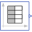

V_pwlPiece-wise linear voltage source |
|
Information
This information is part of the Modelica Standard Library maintained by the Modelica Association.
This model generates a voltage by linear interpolation in a given table. The time points and voltage values are stored in a matrix table[i,j], where the first column table[:,1] contains the time points and the second column contains the voltage to be interpolated. The table interpolation has the following properties:
- The time points need to be monotonically increasing.
- Discontinuities are allowed, by providing the same time point twice in the table.
- Values outside of the table range, are computed by extrapolation through the last or first two points of the table.
- If the table has only one row, no interpolation is performed and the voltage value is just returned independently of the actual time instant, i.e., this is a constant voltage source.
- The table is implemented in a numerically sound way by generating time events at interval boundaries. This generates continuously differentiable values for the integrator.
Example:
table = [0 0
1 0
1 1
2 4
3 9
4 16]
If, e.g., time = 1.0, the voltage v = 0.0 (before event), 1.0 (after event)
e.g., time = 1.5, the voltage v = 2.5,
e.g., time = 2.0, the voltage v = 4.0,
e.g., time = 5.0, the voltage v = 23.0 (i.e., extrapolation).
Parameters (1)
| table |
Value: [0, 0; 1, 1; 2, 4] Type: Real[:,:] Description: Table matrix (time = first column, voltage = second column) |
|---|
Connectors (2)
| p |
Type: PositivePin Description: Positive electrical pin |
|
|---|---|---|
| n |
Type: NegativePin Description: Negative electrical pin |
Components (1)
|  | tab |
Type: TimeTable |
|---|